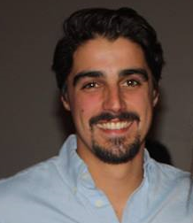

About Me
Hi! My name is Matt Gilliland. I graduated from University at Albany in 2014 with a B.S. in Computer Science & Applied Mathematics with a minor in Business. I took advantage of uAlbany's comined B.S./M.S. program and graduated the following semester with an M.S. in Computer Science. For my Master's project I developed the first official uAlbany App for Andriod and iOS under the guidance of the Marketing Department, and with the help of another stud`ent from the University. We utilized the phonegap framework to create native apps for each respective platform using HTML, CSS, and Javascript source files. I was mainly in charge of writing the source code and testing the app on the android platform.
After graduation, I took a freelance software development job at a company started by an uAlbany alumni called Northfork Web. I worked on three different projects over the course of a year and filled many different roles including: research and development, project manager, and lead developer. When Northfork Web was no longer able to provide me work, I decided to get into the field of carpentry and construction.
For the following two years, I honed my skills as a craftsman working for a local General Contractor. I built a name for myself as someone who was meticulous, thorough, and eager to learn. At the end of 2017, my best friend and I decided to go into business for ourselves and created our own company: Cherry Hill Construction, LLC. Over the past two years Cherry Hill Construction has served the Hudson Valley specializing in residential new home construction and renovation.
After 5 years of working in a trade, I decided that I wanted to get back into the field of Computer Science. I am currently enrolled in the Fullstack Web Development bootcamp at Columbia University. It is my intention to brush up on, and learn, the skills necesarry to launch myself into a new career as a web developer in the NYC area.